I just got a brand new aviation certificate! It’s a Pilot Certificate of Validation (CoV) from the Civil Aviation Authority of Singapore (CAAS).
This is what this precious piece of paper looks like!
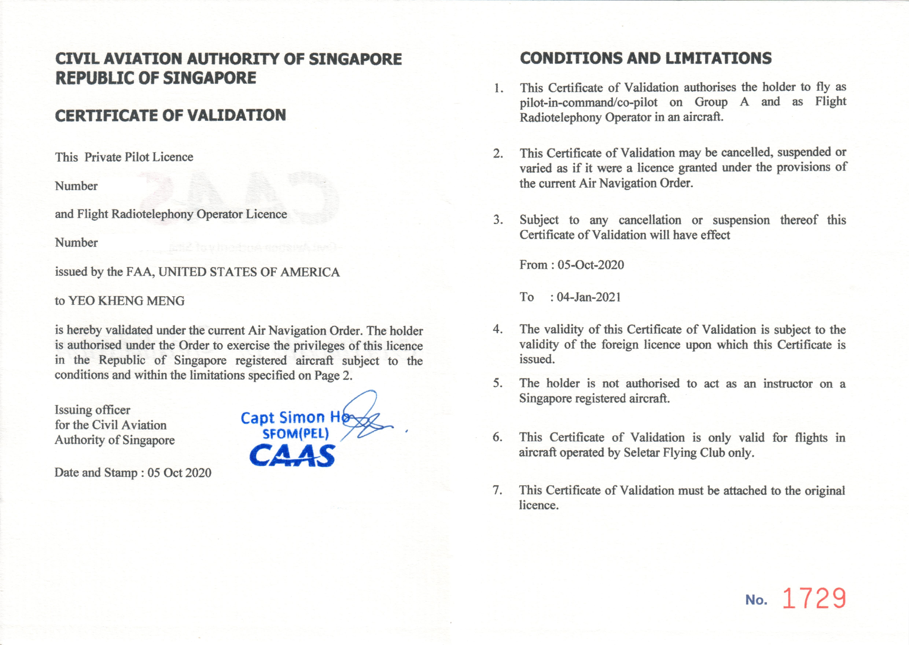
This aviation certificate for a PPL is so rare, I’m not surprised if I’m the only one right now that has a valid one.
What is this certificate for?
It may seem like a simple question, but first it requires some background knowledge before I can answer this:
Pilot licences and flying
Generally speaking and discounting some exceptions, the country you earn your pilot license from will determine which country’s-registered planes you can fly as pilot-in-command.
If you learned in the USA, you can only fly American-registered (N-reg) planes. If you learned in Singapore, you can fly Singapore-registered (9V-reg) planes.
This is not like driving licences where an international driving permit is trivial to obtain and allows one to drive worldwide.
Seletar Flying Club has 2 almost identical Cessna 172N planes.
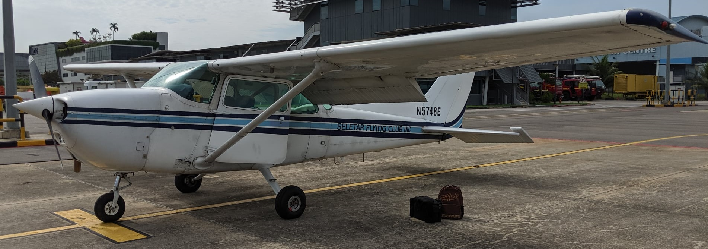
By default I can only fly the American-registered N5748E by virtue of my American Federal Aviation Administration (FAA) PPL.
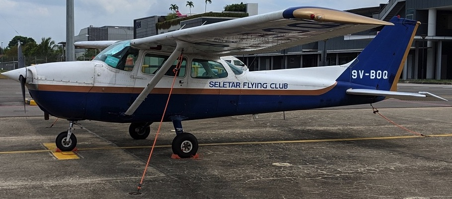
I definitely have the required knowledge and experience to command that Singapore-registered C172 but legally, I cannot do it with just an FAA PPL.
What happens if I want to fly another country’s planes?
In most cases, one will have to take a checkride or flight test. Most aviation authorities worldwide may take into consideration past flight hours and may allow some discount before taking the test with an examiner.
CAAS is no exception.
Why not convert to CAAS PPL then?
Not that it’s impossible. In the long term, it will become more costly for me. I have to:
- Meet the (bi-)annual flight requirements of both licences
- Maintain 2 sets of aviation medical certificates
Plus not forgetting the obvious, I have to pick up the manuevers and meet the performance standards of the CAAS PPL syllabus which are not all the same as the FAA ones I trained for. Then take the test.
These cost extra $$$ and time. All for the benefit of only flying one single 9V-plane!
Plus the fact that CAAS needs my training logbook to be stamped by my US flight school which I forgot to do. Besides, the cost of flying back for just an absurd stamp, plus with the travel restrictions now, I can’t do this any time soon.
What if I don’t want to take a checkride/test?
There is another way which is a validation. A validation can be issued by an Aviation Authority on the basis of another country’s license. However there are usually limitations to it compared to a full license.
So what can I do with a CoV?
- Fly only Singapore-registered planes under the supporting organisation (SFC in this case)
- Only for a 3-month period for a PPL
- License is once-of. Once it expires, I can never get another validation again
- Fly cross-country and night flights (based on my FAA PPL)
Since SFC has only one Singapore-registered aircraft 9V-BOQ, it means this license can only be used to fly this specific plane and nothing else.
For some countries like the US, their CoV-equivalent (foreign-based piggyback) lasts perpetually as long as the original license is valid.
Point 4 is actually something special. Many CAAS PPL holders don’t have those privileges as those are separate ratings which require extra local and overseas instruction. For as long as my CoV is valid, I can technically do more than many CAAS PPL holders on the 9V plane.
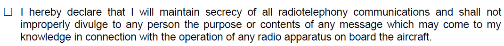
Additionally, CAAS stipulates a restriction that I cannot divulge what I hear over the radio. This means I cannot share videos of my flights in the 9V-plane.
3 months and once-off is so pathetic leh, why doesn’t a CAAS CoV last longer leh?
Of course last longer better for pilots lah. Like the American one for PPL.
Officially it’s in the regulations.
I heard it’s actually meant for pilots who are in the process of converting to the full license.
How did I apply for this validation?
The officially specified way
Now the way to start is to head to CAAS webpage on Converting your Foreign Pilot Licence
Download and fill up the form “Application for Validation of Foreign Flight Crew Licence”
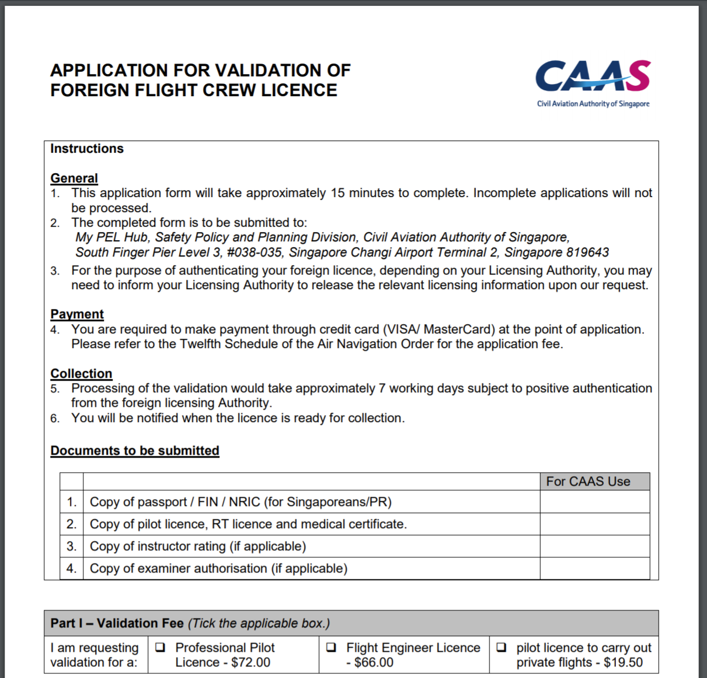
Bring the required documents shown above to CAAS office, make payment and all should be well right? Lol, if things were that simple I don’t have to write this blog post.
What I actually went through?
I followed the document’s instructions to the letter
- I brought copies of my personal documents
- I filled up the application form with the relevant supporting signatures
- I brought my credit card along
My application was figuratively thrown back at me the first time I went there.
Apparently following the instructions listed in that application form does not work. After some red tape and extensive help from Seletar Flying Club, I would eventually get my CoV.
I would find out during this process that there are several unwritten processes and requirements behind this which I shall now share.
1. A local aviation organisation to support the application
A signature from a key person in that organisation is required in the application form. This ensures that no random person with a foreign pilot license can anyhowly just apply.
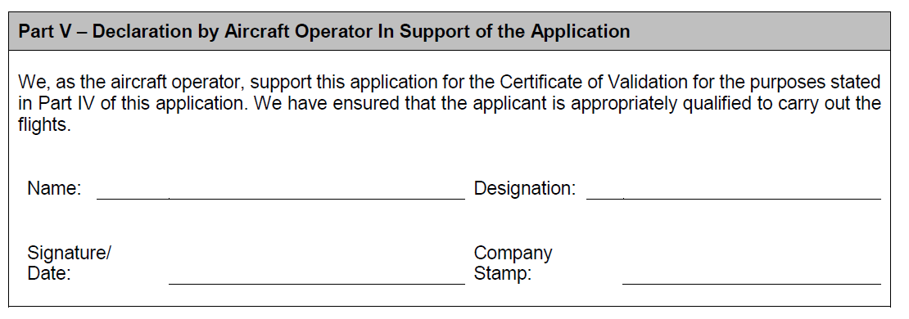
2. Prepare proper documentation
The form lists the following:
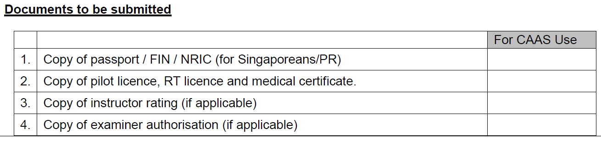
However if you just bring the copies, your application will be rejected. One still has to bring all the originals down for them to compare with your copies to verify their authenticity.
In addition to that, you have to bring down your original logbook and copies to verify your flight hours and recency. Unlike a license conversion, no stamping by the foreign flight school is required.
The form didn’t write there doesn’t mean don’t need.
3. Recent flight experience
I was asked when was my last flight. Apparently recent flight experience is required (or strongly preferred?). Especially so since this is a validation of a PPL means I have a far higher likelihood of flying more often in Singapore’s training area unlike the commercial/airline pilots.
Fortunately, I have been already flying regularly within Singapore’s airspace using my FAA PPL so this is not an issue.
After all this is not the US. Our airspace is small so cannot suka suka give license. Later crash into populated areas.
4. Make an appointment
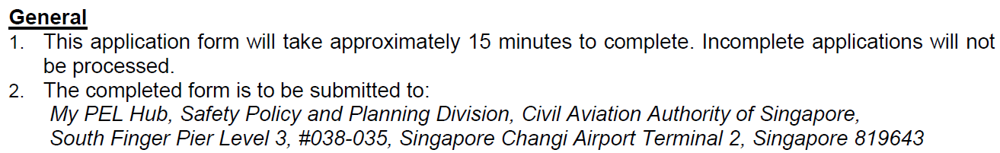
Although the form says it can be filled in 15mins and just bring everything down to the CAAS office, it does not work that way.
Prior appointment has to be made by email by the supporting organisation. In that email, scanned copies of the required documents has to be sent together to CAAS for an initial look to make sure things are in order.
Don’t just go down unannounced and surprise them.
Definitely does not just take 15mins.
5. Head down to the office
Once email approval has been given by CAAS, then head down to CAAS with all the required original documents and photocopies.
The office address is challenging to locate if one has never been there before.
My PEL Hub, Safety Policy and Planning Division, Civil Aviation Authority of Singapore, South Finger Pier Level 3, #038-035, Singapore Changi Airport Terminal 2, Singapore 819643
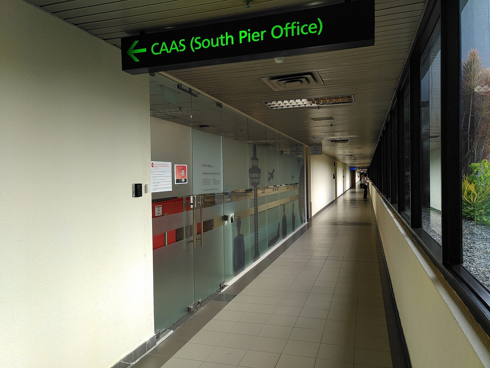
This is one address Google Maps does not give me a clear position of. Although the address is technically correct at Terminal 2, it’s not the T2 most of us are familiar with. It involves a walk through a carpark and a skybridge.
This is made harder by the fact the public-facing T2 is now closed during this COVID-crisis. I was lost in the deserted area trying to find a way to that office.
After locating the office, the process should be a breeze now that the staff are expecting you. Have a chat with them and hand over the required documents. Then wait for an SMS reply.
6. Collecting the cert
CAAS may take up to a few weeks to verify with the foreign authority on the license and process the validation.
Once completed, they’ll send an SMS containing an OTP to collect the certificate from their lockers.
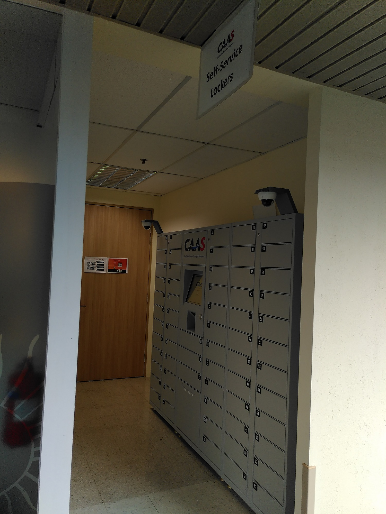
The lockers are located to the right of their office.
Improvements to application form
I suggested the following changes to the application form to the CAAS staff so that future applicants and themselves will face less hassle.
- State that original documents have to be brought down for verification
- State that logbook and a copy is required
- State that prior appointment by email has to be made by the supporting organisation before going down. Include email address to use.
What I learned from this episode
It seems there are lots of stuff we don’t know we don’t know or the rules don’t specify clearly in black and white. It’s only after going through this process then all this details are fleshed out.
General Aviation private pilots are a rare breed in Singapore. After discounting most airline and air force pilots who generally don’t fly GA, there can’t be more than a few hundred local GA pilots with active licences.
Although this PPL CoV certificate to PIC a 9V-plane is rarer than the number of CAAS PPL holders itself, my experience pales in comparison to the effort they have to go through while earning and maintaining their licences. Really salute them.
Still as one private pilot says:
We naughty kids making GA more fun in Singapore hahaha
Conclusion
It’s my hope with this post, whoever wants to follow this path should at least have an easier time.
Other than a future conversion or rule change, it means that this 3-month period is the only time in my life I’ll ever be able to legally command a Singapore-registered aircraft to take passengers.
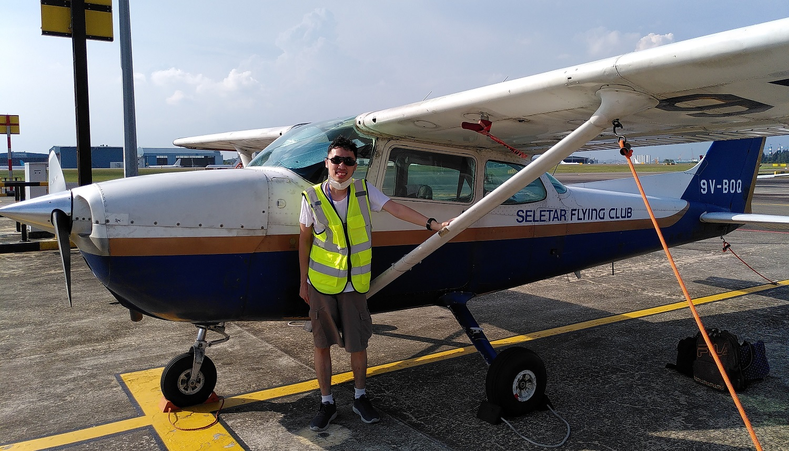
Not any Singapore-registered aircraft though, just this one. I did all of these, just for the short opportunity to fly the only SG-registered Cessna 172 in the world and share the joys with my passengers. It’s a plane many Singaporeans pilots earned their initial wings on. Now I believe, that is a tail number worth writing in my logbook on.
Many thanks to the best SFC instructor Jezreel for helping me throughout the process to get my CoV.


{kind=link}
{kind=link}
{kind=link}
{kind=link}
{kind=link}
{kind=link}
{kind=link}
{kind=link}
{kind=link}
{kind=link}
{kind=link}